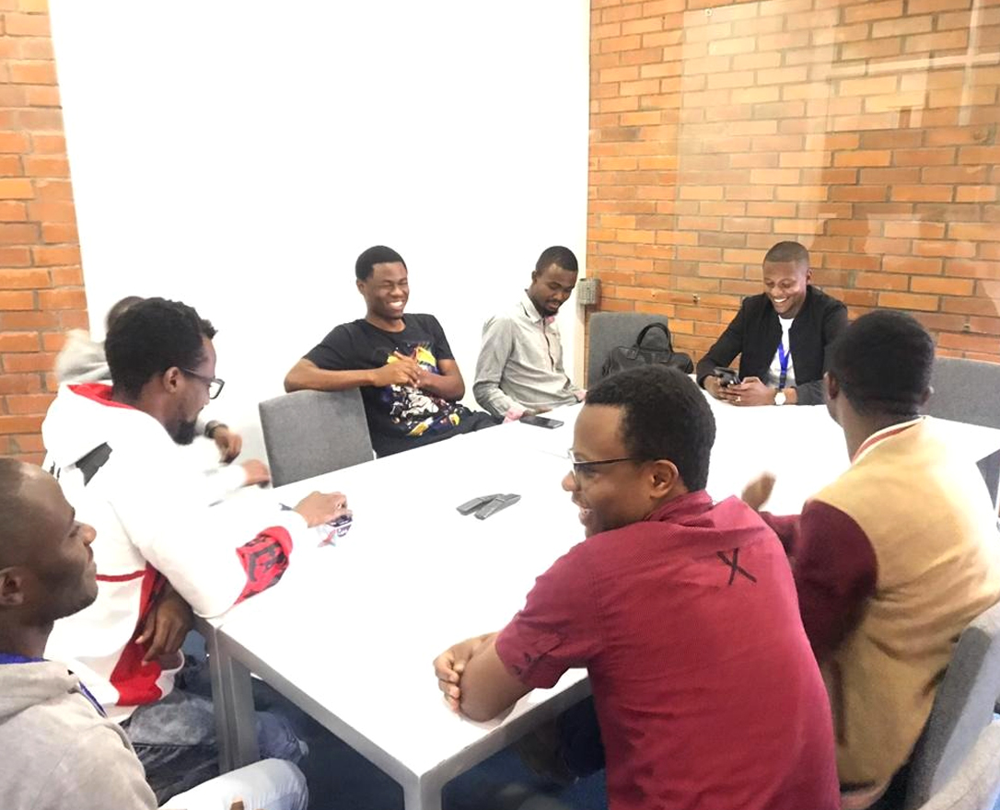

<div class="about bg-gray-600" id="about">
    <div class="flex mb-4 sm:py-16 content">
        <div class="w-1/2 overflow-hidden sm:w-1/2 md:w-full lg:w-1/2 xl:w-1/2 right">
          <div class="about-image">
              <div class="about-image-under">
                
              </div>
              <div class="image">
                  
              </div>
          </div>
          <!-- <p>WHO WE ARE</p>
          <h2>About MeyllOS</h2>
          <p>MeyllOS Founded in 2019, we have a strong market position due to our high-quality, professional and personalized software development solutions.
             Our partners include leading companies in various industries.
             Our company focused on custom web development, native mobile development, AWS and Serverless consulting. Our narrow technology focus helps to build highly-skilled remote dedicated teams for startups and established organizations.
             Today, our technology stack is based on JavaScript, Node.js, TypeScript, Angular, React, Vue.js, GraphQL, MongoDB, Redis, AWS, Serverless, Firebase, and Native Mobile with iOS Swift, Objective-C.</p> -->
        </div>
        <div class="w-1/2 overflow-hidden sm:w-1/2 md:w-full lg:w-1/2 xl:w-1/2 left">
          <p>WHO WE ARE</p>
          <h2>About MeyllOS</h2>
          <p>MeyllOS Founded in 2018, we have a strong market position due to our high-quality, professional and personalized software development solutions.
              Our partners include leading companies in various industries.
              Our company focused on custom web development, native mobile development, AWS and Serverless consulting. Our narrow technology focus helps to build highly-skilled remote dedicated teams for startups and established organizations.
              Today, our technology stack is based on JavaScript, Node.js, TypeScript, Angular, React, Vue.js, GraphQL, MongoDB, Redis, AWS, Serverless, Firebase, and Native Mobile with iOS Swift, Objective-C.
           </p> <br>
           <p class="second-mobile-text"> <b>Our Mission :</b> We help businesses develop, innovate and compete in the continuously changing environment. Our team of experts go beyond the standards to understand your business needs and deliver the best solutions.</p>
        </div>
      </div>
</div>